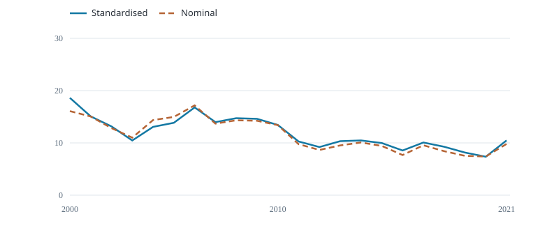
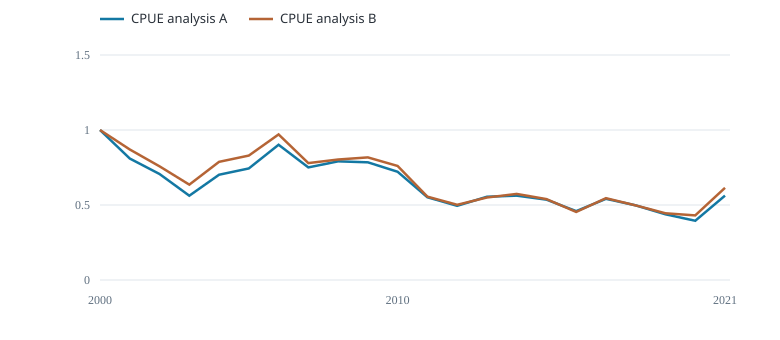

Fiji longline albacore · 2000–2021 · 132 released records used by A.
Standardised and nominal CPUE

Fish per 1,000 hooks
Relative indices A and B

Each index relative to its own first year
Both curves use the same selected rows; 132 used, 0 excluded; no additional effort filter.
The first plot uses the same A records for both curves. Any A effort filter applies to both; B uses its own eligible records.
Standardised: Arithmetic mean of response-scale predictions with equal fixed stratum weights. Nominal: 1,000 × annual fish numbers / annual hooks on the A rows.
A predicts catch at 1,000 hooks in each of six fixed cell–quarter strata and averages with equal weights. B adjusts quarter only on that support. The local fleet index has no supplied confidence intervals and has not been validated for stock-wide abundance.
The A/B comparison includes differences in adjustment and row selection. Each relative index equals one in its own first year.